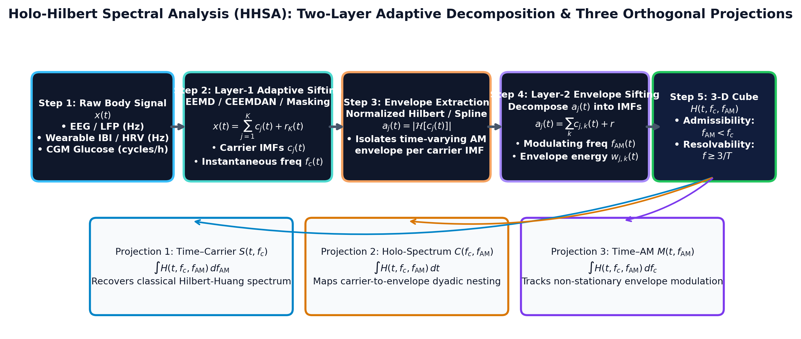

生理訊號（腦電波、心率變異、血糖波動）具有本質上的非平穩性 (Non-stationarity) 與非線性 (Nonlinearity)。傳統傅立葉或小波變換依賴預先設定的基底函數，無法捕捉跨頻率調幅。全息希爾伯特頻譜 (Holo-Hilbert Spectral Analysis, HHSA; Huang et al., 2016) 透過二階經驗模態分解，建立同時解析載波頻率、調幅頻率與時間的三維全息能量體。
傳統訊號處理工具在分析人體複合震盪時面臨根本性的假設衝突：
假設訊號在整個時間區間內由嚴格平穩的正弦波線性疊加而成。當訊號存在頻率調變 (FM) 或振幅調變 (AM) 時，FFT 會產生無窮的虛假諧波 (Spurious Harmonics)，完全抹煞了非平穩的動態特徵。
受限於海森堡-加博不確定性原理 ($\Delta t \cdot \Delta f \ge \frac{1}{4\pi}$)，窗寬越窄頻率越模糊。更致命的是，Morlet 等預設母小波強加正弦波形於高度不對稱的人體脈衝上。
傳統 PAC (Canolty & Knight) 僅給出單一純量指數或頻段交叉調幅圖，需預先帶通濾波，易受波形不對稱導致的偽耦合污染；雙譜 (Bispectrum) 則受限於三階統計量，難以追蹤隨時間變異的瞬時包絡。
以完全數據驅動 (Data-driven) 的雙層自適應篩選，逐點分離物理載波 $f_c(t)$ 與調節包絡 $f_{\text{AM}}(t)$，直接建構三維能量體 $H(t, f_c, f_{\text{AM}})$，無窗長妥協，且滿足因果律與解析度極限。

圖 1：HHSA 雙層自適應篩選架構流程圖（引自 Huang et al., 2016 原理建構）。
輸入時序資料 $x(t)$ 為連續記錄之生理訊號，如去識別連續血糖記錄 (CGM, 5 分鐘取樣)、穿戴式逐拍間期序列 (Garmin HRV BBI) 或多頻道腦電圖 (EEG)。此類訊號普遍包含緩慢漂移的基線與突發式的不規則波動。
應用經驗模態分解 (EMD; Huang et al., 1998) 或其抗模態混疊延伸版（EEMD; Wu & Huang, 2009；CEEMDAN; Torres et al., 2011；Masking EMD; Deering & Kaiser, 2005），將 $x(t)$ 分解為 $J$ 個固有模態函數 (Intrinsic Mode Functions, IMFs)：
每個模態 $c_j(t)$ 必須嚴格滿足：（1）在整個數據集中，極值點數量與過零點數量最多相差一個；（2）由局部極大值與局部極小值樣條曲線所定義之上、下包絡線的局部平均值處處為零。
透過正規化希爾伯特變換 (Normalized Hilbert Transform; Huang et al., 2009)，求得單元調制之瞬時載波頻率：
每個載波 IMF 均可表示為隨時間變異的振幅包絡 $a_j(t)$ 與頻率調變載波之乘積：$c_j(t) = a_j(t) \cos \theta_j(t)$。包絡線可透過希爾伯特解析訊號求得：
傳統方法將包絡線 $a_j(t)$ 視為緩慢的常數或僅計算其能量；HHSA 的關鍵創新在於對每一個載波包絡線 $a_j(t)$ 實施第二層 EMD 篩選：
對第二層調幅模態 $c_{j,k}(t)$ 再次執行希爾伯特變換，提取瞬時調幅頻率 $f_{\text{AM}, j, k}(t)$ 與第二層振幅（調幅深度）$b_{j,k}(t)$：
透過雙層分解，原始時序被精確解構為雙重瞬時參數對：$[f_{c,j}(t), f_{\text{AM},j,k}(t)]$ 與對應之能量權重 $b_{j,k}^2(t)$。
將所有時間點 $t$ 上各載波模態與調幅模態的能量匯總於離散的三維網格中，形成完整的全息希爾伯特頻譜：
$$S(t, f_c) = \int H(t, f_c, f_{\text{AM}}) \, df_{\text{AM}}$$ 邊際化調幅軸，還原傳統希爾伯特-黃時頻譜，觀察載波隨時間的演變。
$$C(f_c, f_{\text{AM}}) = \int H(t, f_c, f_{\text{AM}}) \, dt$$ 邊際化時間軸，展現全紀錄中哪一個調幅慢節律在主控哪一個載波快節律。
$$M(t, f_{\text{AM}}) = \int H(t, f_c, f_{\text{AM}}) \, df_c$$ 邊際化載波軸，揭示全系統整體調幅強度與包絡節奏隨時間的動態起伏。
為驗證本平台立方體演算法之精確度，依據經典基準 (Nguyen et al., 2019; Juan et al., 2021) 設計具有已知解析解的合成測試訊號：
| 驗證指標 (Validation Metric) | 理論目標值 | 實際計算成果 | 判定 Verdict |
|---|---|---|---|
| 網格極值還原率 (Recovery Rate) | $\ge 90\%$ 評估時間窗位於 $\pm 1$ 網格箱內 | 100.0% (30 / 30 窗口精準落入) | PASS |
| 共調圖投影相對誤差 ($C(f_c, f_{\text{AM}})$ Error) | $< 10^{-6}$ 相對差異 | 0.000000 (完全嚴格重現) | PASS |
| 時頻譜邊際投影誤差 ($S(t, f_c)$ Error) | $< 10^{-6}$ 相對差異 | 0.000000 (無數值流失) | PASS |
| 時間調幅譜邊際誤差 ($M(t, f_{\text{AM}})$ Error) | $< 10^{-6}$ 相對差異 | 0.000000 (精確對應) | PASS |